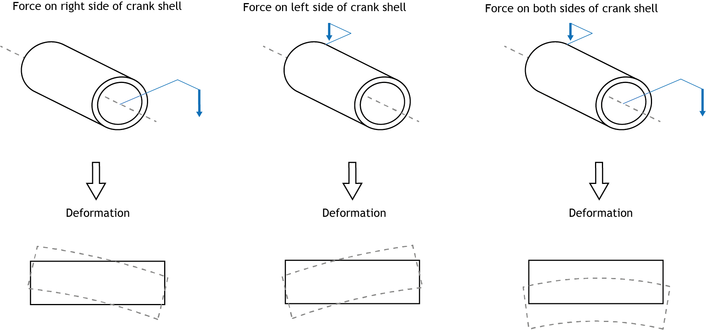

Brief
To create a CAD model of lightweight tandem bike CAD model with higher natural frequency than 30Hz and minimum product life of 10 years. Conduct FEA analysis to test.
To achieve the brief above, I first made a solid model of a tandem bike on solidworks. Then, I identified the methods for the FEA simulations (i.e., boundary and loading conditions, simulation parameters, etc.). This model was then analysed using two different materials (Aluminum Alloy 7075 – T6, and Titanium Ti-5Al-2.5Sn). Sanity checks and mesh refinement were also conducted.
In order to improve the natural frequency of the bike, a new solidworks model was made. This revised model was analyzed using the same methods and the results were compared.
01
Date
Mar 2021 - Apr 2021
02
Skills
Finite Element Analysis, Solidworks
03
Software
Solidworks
04
Team
N/A (Individual)
05
Grade
N/A
After making a solid model of the tandem bicycle according to the specifications of the brief, I prepared the simulations in order to analyse its performance.
For the purpose of these studies, the following loading conditions were assumed:
The fork shell is assumed to be fixed (i.e. no degrees of freedom).
The hinged rear wheel bearing are assumed to be hinged (i.e. one degree of freedom - moment in the y direaction).
A gravitational force was added to all simulations/studies such that the external loads/masses used for the rest of the loading conditions could be effective.
It was added perpendicular to the top frame with a value of -9.81ms^-2
To represent the force of the pedals, external loads were used acting on the inner surface of the crank shell. It is important to note that when conducting the studies, the forces to the left and right side of the frame were separated. This is because when riding a bicycle, the pedaling force alternates between one side of the crank shell and the other, causing it to deform to one side and then to the other.
Four forces were added in total, one for each side of each crank shell. Each external load is 100mm in front and 200mm to the side (towards the front of the bike) from the origin of the crank shell edge surface. Therfore, to add these forces, custom coordinate systems were made on Solidworks. The force is -750 N in the vertical direction.
The mass of the riders is modeled using a remote mass that is 100mm above each seat acting on the top inner surface of the seat tubes. This is a simplification of the seat mounted to a bike frame with a tube inserted inside (the seat rests on the top part of the seat tube of the bike frame).
Two loads of 150kg were added, one for each seat tube (100mm above the tube). By assuming the mass of each rider to be 150kg, this simulation in itself includes a safety factor of approximately 2.
The fatigue analysis consists of three static analysis. The bike frame needs to sustain one million cycles of pedaling with two 150kg rider sitting on top of it, therefore, to conduct this study the following events were used on each bike frame design.
01
Pedal Force 1 Analysis
This contains the forces of the pedals from the right side of the bake (if looking at it from behind). There are 1000000 (one million) loading cycles and has R = 0 (zero based loading type), meaning it varies from 0 to -750N.
02
Pedal Force 2 Analysis
This contains the forces of the pedals from the left side of the bake (if looking at it from behind). There are 1000000 (one million) loading cycles and has R = 0 (zero based loading type), meaning it varies from 0 to -750N.
03
Rider Mass Analysis
To calculate whether the frame is effective during its 10-year lifetime (i.e., one-million cycles) it’s also important to consider the force of the riders going on and off the bike. On average, a rider bikes 2.5 times a week [4] (i.e., 1300 times/cycles in 10 years).
Gravity was the only load applied to the frequency analysis. Adding the mass of the riders would cause the natural frequency to be unrealistically low, therefore, it was left out of this study. The direct sparse solver was used.
The process undertaken to complete this project required a significant amount of prototyping and testing to get the machine to work as expected. Although the process became frustrating (mostly due to the unreliability of cardboard for such a machine), this project has taught me a lot about robotics.
Before running all simulations, sanity checks were conducted on the first model of the bike frame (using aluminum alloy) by running the two static simulations (as the pedal analysis are symmetrical). These sanity checks, although they don’t guarantee the accuracy of the results, ensure they are not completely wrong and give confidence to proceed with the rest of the analysis
The maximum displacement (3.346mm) occurred in the pedal simulation/ This displacement is very small and almost invisible to the human eye. Therefore, this sanity check helps rule out any sign of abnormal results due to deformation.
The maximum stress that the structure was subject to was in the Rider Mass Static Simulation. The maximum stress is lower than the yield strength of aluminum. It can be intuitively determined that this sanity check demonstrates the results are not completely wrong; the difference between the maximum stress and the yield stress is not too high.
Mesh refinement and control was carried out after running the two static simulations. The simulations were run on the first frame iteration with aluminum alloy and the same mesh control was implemented for the rest of frequency and fatigue simulations.
A 5mm mesh was used for the overall bike frame.
After running the pedal and the adult mass simulation, the highest stress concentration was in the point shown – a fillet on the rear seat tube. In all of the simulations, there was also high stress concentrations in the fillets. Therefore, the mesh of all fillets was set to 3mm (including around the point of highest concentration.
To see what the maximum stress converges to, the fillet with the highest stress was set to 2mm, 1mm, and, finally, 0.1mm to ensure correct approximation. All these points can be seen in figure 12. This shows that the maximum stress converges to approximately 174.4 Mpa.
For the rest of the simulations, the mesh was set to 5mm. Except for 3mm for the fillets and 1mm for the areas around high stress concentration (to reduce computing time).
The fatigue analysis show that this first bike design is able to sustain 10 years of life without breaking (with aluminum or with titanium).
When using aluminum, the damage percentage after 10 years is 60% (i.e. after 10 years it has reached 60% of its product life). Using titanium decreases the percentage by a half. This is because titanium has a higher yield strength and its SN curve, has a higher fatigue limit than aluminum at all number of loading cycles.
| Material | Damage % after ten years |
|---|---|
| Aluminum | 60% |
| Titanium | 30% |
The results of the frequency simulation show that the lowest natural frequency with aluminum (first mode shape) is 58.9 Hz. Therefore, this tandem bike frame model meets the expectations of a comfortable design for the riders as the natural frequency is higher than 30 Hz.
When using titanium, this slightly decreases. This is because titanium is 60% more dense that aluminum.
| Material | Natural Frequency (Hz) | ||||
|---|---|---|---|---|---|
| Mode 1 | Mode 2 | Mode 3 | Mode 4 | Mode 5 | |
| Aluminum | 58.893 | 86.907 | 121.91 | 155.61 | 198.63 |
| Titanium | 57.743 | 85.315 | 119.58 | 152.83 | 194.57 |
The aim of the second iteration is to increase the natural frequency of the tandem bike frame to make it more comfortable for the riders). Natural frequency is the frequency at which the system resonates and there are two factors that contribute to a it:
01
It’s mass, the lower the mass, the higher the natural frequency.
02
It’s stiffness, the higher the stiffness, the higher the natural frequency.
I changed the first model in three ways in order to improve its natural frequency:
The diameter of the above tubes of the frame were increased by 8mm (36mm to 44mm) while keeping the thickness the same (2mm). Increasing stiffness without increasing mass.
The diameter of the rear wheel tubes was decreased by 6mm (from 22mm to 28mm) while keeping the thickness the same (5mm), thus increasing the stiffness in this area as well.
The bottom rear wheel tube and the rear seat tube were shortened in order to decrease the mass of the frame.
The fatigue analysis show that this bike design is also able to sustain 10 years of life without breaking (with aluminum or with titanium).
When using aluminum, the damage percentage after 10 years is 40% (which is 20% lower than the previous design). Using titanium decreases the percentage by a half, as previously.
| Material | Damage % after ten years |
|---|---|
| Aluminum | 40% |
| Titanium | 20% |
The results of the frequency simulation show that the natural frequency of the new model is much better than the previous:
| Material | Natural Frequency (Hz) | ||||
|---|---|---|---|---|---|
| Mode 1 | Mode 2 | Mode 3 | Mode 4 | Mode 5 | |
| Aluminum | 76.107 | 111.78 | 153.38 | 201.3 | 206.48 |
| Titanium | 74.628 | 109.74 | 150.4 | 197.74 | 202.3 |
All models/iterations passed the design specifications set for the brief. The second model, however, performed better in both simulations; by increasing its stiffness without increasing its mass, the second frame achieved a higher natural frequency and lower damage percentage after 10 years while remaining light weight.
In terms of the material, on one hand, Aluminum achieved more desirable results in terms of its natural frequency. Due to its lower density, the two aluminum frames had a higher natural frequency than their titanium counterpart. On the other hand, Titanium yielded a lower percentage damage than Aluminum. Not only does titanium have a preferable SN curve (with higher fatigue limit), the use of this material also decreased the maximum stress in the static analysis.
Simulating conditions using FEA can provide a very good indication of real-life scenarios and problems. It is also an optimal way of testing different materials and/or making quick fixes to the model to see how it affects the results of the simulation, which would be tedious to do with physical prototypes (even impossible as making rapid prototypes with materials such as metals is difficult).
Despite the clear benefits of FE methods, there are three primary sources of errors that arise when carrying out FEA:
01
Modelling Error
This method of analysis is a mathematical idealization, therefore, there are discrepancies between the predictions of the model and the physical phenomenon. In the case of the bike frame, these are some of the discrepancies: (a) Although the boundary conditions have been set to represent reality as much as possible, the fixed geometry in the crank shell and fixed hinge of the rear wheel bearings do not depict a bike frame in use. (b) The CAD model itself is inaccurate to the real environment (e.g., the fillets used to represent the welding may not be the same material as the bulk material used for welding). (c) The loading conditions of the pedaling force do not consider the effects of the chain or how forces will change if the bike is turning, going uphill, etc.
02
Discretization Error
FEA discretization is an approximation of the mathematical model, which is therefore another source of error. In the case of the bike frame, this error can be caused due to the mesh, which approximates the geometry of the bike frame – a more accurate (smaller element size) mesh results in better results but higher computational time and power.
03
Numerical Error
Introduced by the computer using finite precision to represent data and the results of manipulation. This error can be reduced by using higher precision variables to store data. In this study, linear analysis was used in all simulations, meaning changes of stress are treated as linear. However, in real conditions, the areas of high stress would usually be caused by sudden (i.e., non-linear) changes to the model’s geometry. The way data is treated during the linear simulation could have therefore introduced numerical errors in the results.